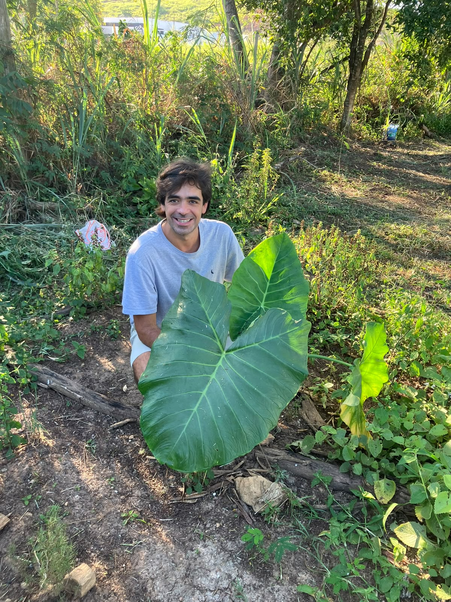

Um laboratório vivo na escola
Onde o cuidado
vira colheita.
Um espaço para aprender com a terra, cultivar relações e descobrir que toda mudança começa pequena.
Explorar o projeto
Sobre a iniciativa
Uma escola que
floresce junto.
O espaço agroecológico é um lugar de encontro entre conhecimento, comunidade e natureza.
Na prática, nós estudantes, e nosso professor Felipe Machado experimentam formas mais sustentáveis de cuidar do solo e das plantas cultivadas. Cada canteiro conta uma história, pois, várias turmas já participaram do projeto e deixaram suas marcas registradas.
compartilhado
de aprender

A terra também é uma sala de aula.
Em movimento
Veja o projeto
ganhar vida.
história entra aqui
Adicione o link ou arquivo do vídeo do projeto quando ele estiver pronto.
Em construção
Catálogo
de plantas.
Em breve, este espaço vai reunir as espécies cultivadas na escola e as histórias de cada uma delas.
Voltar para o início